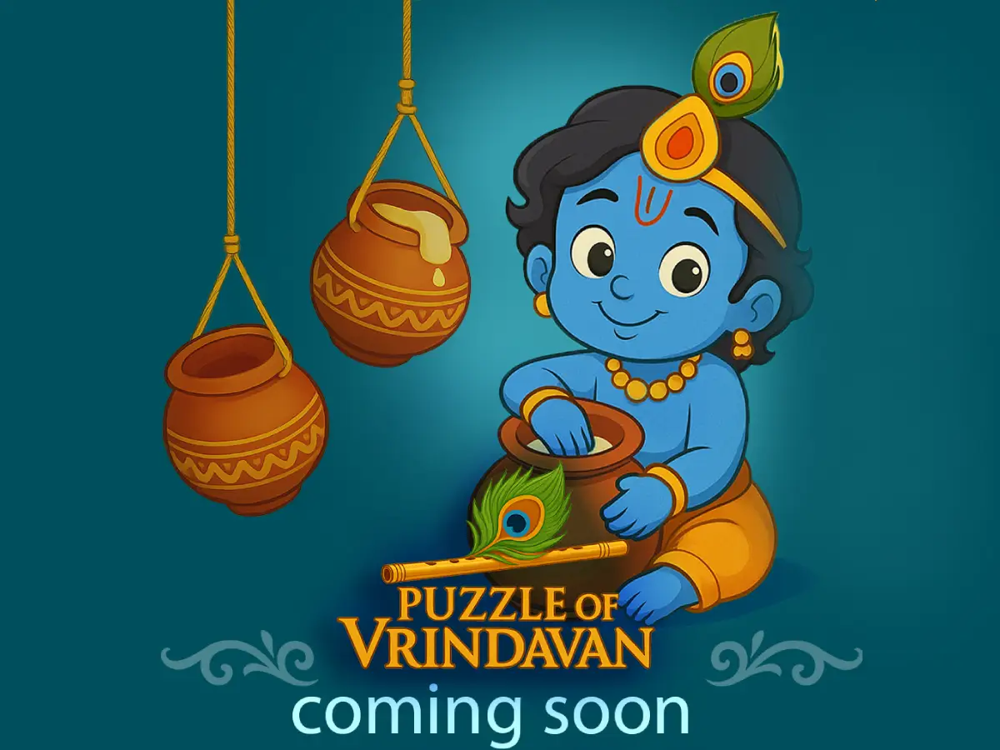

Unique Tile Puzzles
Rotate and position puzzle pieces to reveal hidden objects and complete handcrafted challenges.

Playful puzzles inspired by Vrindavan.
Reveal hidden symbols, solve handcrafted puzzles, and explore a playful world inspired by Vrindavan, Indian art, and cultural storytelling.
Puzzle of Vrindavan combines relaxing puzzle gameplay, ornamental visuals, collectible themes, and painterly presentation into a calm mobile experience.
Relaxing puzzles inspired by culture and imagination.
Puzzle of Vrindavan is a casual puzzle experience inspired by Krishna-themed art direction, decorative Indian motifs, and playful visual storytelling.
Rotate, place, and reveal puzzle tiles to uncover hidden symbols including lotus flowers, peacock feathers, waterpots, cows, and sacred ornaments.
The experience blends relaxing puzzle mechanics, handcrafted visual design, collectible-inspired gameplay, casual strategy, cultural atmosphere, and mobile-friendly progression.
Designed for short relaxing sessions, the game focuses on discovery, pattern recognition, and satisfying puzzle interactions.

Colorful casual puzzle play
Rotate and position puzzle pieces to reveal hidden objects and complete handcrafted challenges.
Explore painterly environments inspired by Vrindavan, Indian ornamentation, and traditional motifs.
Designed for calm, accessible play sessions with intuitive controls.
Reveal symbolic objects including peacock feathers, lotus flowers, butter pots, sacred decorations, and more.
Optimized for casual mobile gameplay and quick sessions.
Unlock new puzzle variations, decorative themes, and increasingly creative layouts.
Players strategically place and rotate puzzle tiles to reveal hidden symbols within handcrafted puzzle boards.
Each level introduces new combinations, layouts, and visual patterns inspired by Indian decorative design and playful storytelling.
The experience focuses on satisfying interactions, visual clarity, and calm progression.
Puzzle of Vrindavan embraces a warm painterly aesthetic filled with ornamental patterns, glowing colors, soft lighting, and handcrafted textures inspired by Indian cultural art traditions.
The visual design aims to create a relaxing and welcoming atmosphere while maintaining clean mobile readability.
Early scenes from the game
Answer one question. Unlock a glimpse of the game world.


Start your puzzle journey.
Available on mobile devices.